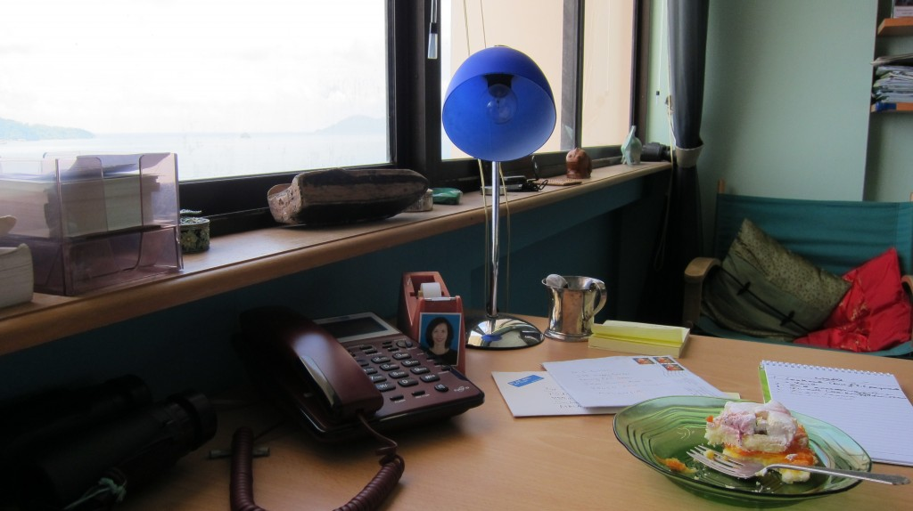
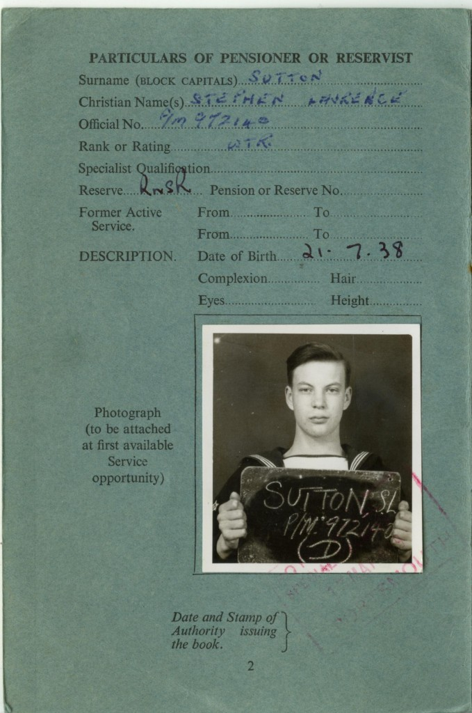
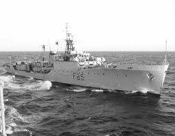
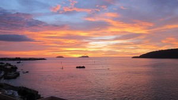
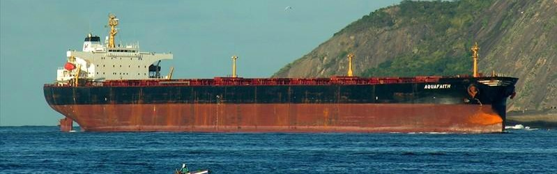
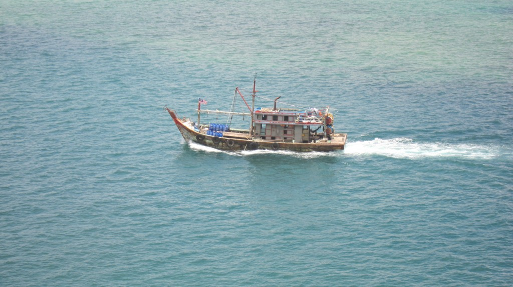

November 7, 2023. March 12, 2012 by Stephen Sutton
I’m sitting in my office on the 9th floor of the Wisma Merdeka, a shopping mall with offices above. This isn’t an ordinary office because it is my retirement home where I spend most of my waking hours. My desk is carefully placed right next to a big window 6 feet high and 14 feet long, looking out over KK’s enormous harbour. Directly below me is the roof of the 6th floor level of the car park above the shops, hiding the road along the sea frontage. So all I see in front is the parapet of the car park and then the sea. Small speedboats come charging in and then just disappear. In effect I’m directly above the water.
It’s 10.30 in the morning and the sun is behind me, and since the skies are blue, the sea is blue too, except for the shallows, which are a very tropical turquoise. A big bonus is that these shallows are very extensive, and in fact the only deep water channel between the northern and southern parts of the harbour is directly under my window. The big ships can’t use this, but I get small coasters, trawlers and honest looking tug boats trotting by, right beneath me.
This harbour has a necklace of seven islands, large and small, which protect it from the waves of the S. China Sea. Not that there are too many of these, as we’re in the ‘horse latitudes’ of calm seas, closer to the Equator than the trade wind belts. Joseph Conrad described the moods and fancies of these latitudes very well. Very often, in between the South-west and North-east Monsoons, it is almost calm, the mirror sea reflecting back the isolated towers of thunderstorms so characteristic of these inter monsoonal seasons. These inter-monsoonals are the drier times, sometimes very dry. Most years its dry(ish!) from February to May and then from August to November, but last year it just rained.
For the merchant ships of the early European spice traders these inter monsoon periods were difficult times, with no wind except in the thunderstorms, when the sky and sea would go gun metal gray and a vicious squall line would bear down on you like a ton of bricks and take your masts away before you could furl the sails. You’d see it as a white line in the distance, steadily approaching. These squall lines occur now, just the same. The little boats race for cover. Very occasionally there is a waterspout on the squall line, in which case the entire office population of the CBD heads for home in a panic, with the result that they all sit in a traffic jam for hours.
The Chinese junks which preceded the European merchantmen used to travel down on the North-east Monsoon in the late autumn of the Northern Hemisphere and then barter cargo, replenish stores, relax (there is a lot of Chinese blood in the local populations!) and then return north to China on the South-west Monsoon sometime in May.
During the monsoons fresh winds can blow for days, but in 20 years I’ve never seen anything like a full blown Atlantic gale. The only one which came near was ‘Storm Greg’ which came through in 1996 while I was away, blowing off a lot of roofs, drowning 150 people and causing consternation along the wharves, which aren’t protected enough for that. It strengthened to a typhoon later, on its way N, and drowned some 2,000 fishermen in Vietnamese waters, it is said.
But today, with the NE Monsoon taking a break, its sunny, the sea is intensely blue and turquoise and a big container ship is steaming out steadily through the necklace of islands, laden to the eyeballs with containers stacked five high. Through my binoculars I can often see these ships sinking gradually down over the horizon, leaving, if not loaded up, with just the disembodied tall tower of the cabins and bridge visible. Takes one back to the sailing merchantmen, when what you first saw approaching were masts & top-gallant sails. It’s the easiest observation you can make of the curvature of the Earth.
At least these tall masted ships would not have been pirates. Pirates didn’t have the technological know-how to sail square riggers. For all that, in the 19th century piracy used to be a huge problem around here. They would get together as many as a 100 long canoes each with 50 cut-throats and with captured merchantmen’s crews chained to oars. The pirates tended to kill the officers and keep the crew for the oars or sell them on as slaves. At one time an average of 500 European seamen were being captured each year. Most of the sea going canoes had oars as well as sails so that they could bear down on becalmed merchantmen and and capture even the largest. These pirates became very wealthy and the scourge of the traders. It was only the immense profits that a cargo of nutmeg, cloves or pepper could make that kept the Europeans coming.
The tables were turned when steam gunboats appeared. Out-run and out-gunned, the pirates were put on the back foot. The British Navy established a base in Singapore with the really gung-ho Captain Keppel and his Royal Navy frigate. He went after the pirates big time (and also protected the first Rajah Brooke of Sarawak). The coup de grace was when one large raiding group returned after several months pirating around the Malay Archipelago to find a Spanish task force had raided their island villages, massacred most of the women and children, taken the others away, killed all the livestock and cut down all the coconut trees. The islands were thus rendered uninhabitable. This put paid to large scale piracy, but old habits and glory days die hard and on a small scale it exists to this day. In 1988, when I first landed in Lahad Datu, the East Coast gateway to the Danum Valley Field Centre, there was an armoured car patrolling the main street. A few months before, a pirate raid from the Phillipines had shot up the banks, killed half a dozen people, and terrorized the town for hours. Our-man-in-Danum (Tony Greer, British senior scientist) was in town in the bank when the raid started and had to hide the whole day behind the counter while the raid went on. Crikey! I thought. I can see bullet holes in the bank. I’ve come to study insects in the forest and now I’m in a cowboy town wondering when the next raid is going to be!
Capt Keppel became an Admiral and one of those naval eminences commemorated by having a succession of ships named after him. In fact when I was a pay clerk doing National Service in the British navy in 1958-60 I had to look after the pay accounts of the crew of the frigate HMS Keppel, a job which I did with considerable inconsistency. This meant that when the ship was going off somewhere promising like Gothenburg or Paris for a couple of weeks R&R, I had an excuse to go on board and sort out the crew whose pay I had (sometimes!) overpaid and then had to stop. The only snag was that big hairy stokers can get quite mean when they’ve had no pay.
Alert readers may protest that frigates can’t get up the Seine as far as Paris. In fact we were bussed up from Le Havre and, as the only public school boy around, I was impressed as interpreter to arrange a football match against the Foreign Legion, in whose barracks we were billeted. Buts that’s another story (‘The Night I Joined the Foreign Legion’ – coming to an email near you soon)
HMS Keppel 1958. I’m below decks pacifying the stokers
And moreover, that’s a long way from Borneo. The pirate raid on Lahad Datu was on the East Coast, facing the Phillipines and next to Indonesia in the south. ‘Cowboy country’ we in KK on the West Coast call it. Around KK there are too many Navy and police boats to make it easy. Actually quite a few of the descendants are here, as they came as refugees in the 1970’s from a vicious civil war on Mindanao in the southern Phillipines. They were given international refugee status and allowed to settle on Pulau Gaya, the largest of the island necklace that creates KK harbour and directly opposite me, about a mile away across the deep water channel and the shallows. There are perhaps some 10,000 folk over there, in 4 water villages with all the houses on stilts in the sea, some six or seven deep from the land. The outer boundaries are set by storms, which every so often wash away the houses built too far out (as one of the girls on our Borneo Books staff and her family found out). The inner boundaries are set partly by the steep shores, but mainly by the absolute disinclination of these sea-based folk to live on land. As Gaya was kept by the British North Borneo Company strictly off limits to locals so that the company settlement there would be safer from insurrection, the island is still entirely forest covered and is now a National Park. As I look across to it, I can see the fringing water villages, then a first ridge of very disturbed forest with a lot of invasive eucalypts, but beyond that several succeeding ridges with really good rainforest. There is quite a good fauna, with pied hornbills, macaques, wild pigs – and pit vipers. As good south Filipino Moslems, the water village people do not keep dogs or hunt pigs, so the wildlife goes undisturbed, in marked contrast to its fate in the mountains at the back of KK where the non-Muslim Dusun tribes live and hunt with their dogs, snares and (nowadays) guns. Guns are illegal but are home made ones are quite common.
Typical KK over-the-top sunset. You are (you’ve guessed it!) looking west.
The Gaya island folk still fish in small boats, but that can support only a few people. Instead they commute to the city each day in small speedboats, to work in the shops (the girls) or do construction work, or on the trawlers. There is also a lively inbound smuggling trade of cheap cigarettes, drugs and beer (although as Moslems they don’t drink, they’re happy to supply the city dwellers, most of whom are Christian or at any rate non-Muslim and do drink).
What goes on there is the business of the villagers (not many of whom are actually Malaysian citizens, they’ve just got refugee status). They are partly self governing. The State does provide them with schools and even playgrounds on stilts, and they have mosques, but there is no mains electricity or piped water, so it’s a very simple existence. However its only ten minutes by speedboat from the city and the unemployment rate in town is effectively zero for those who want to work.
The other part of the trade off is that the commuters are subject to quite strict inspections when they cross the water to the city. The speedboats get stopped when they cross over (except at lunch times, dinner times, night time, when it’s raining, when grandma has died, on public holidays and other times when the security forces aren’t feeling forceful) and everybody has to put on a life jacket and have their papers checked by one or other of: the Marine Police; The Coastguard; the Fisheries Department; The Customs and the Malaysian Royal Navy.
Last week, a monster ship appeared, hull down over the horizon, gradually turning to head for the harbour. It anchored in the lee of one of the islands. It was a huge, 85,000 tons, capable of carrying 65,000 tons of dry bulk cargo. ‘Dry bulk cargo’ could include timber so for a while I was fearful this was going to be a monster drain of trees from the Interior forests (or what’s left of them).
With my telescope I read the name ‘Aquafaith’ on the stern and googled it. Immediate result! Its last port of call was Dampier (I think that’s NW Australia), probably to pick up a cargo of iron ore. However when it appeared here it was empty. It stayed a few days, got visited by the Coastguard and slid away. A most unlikely visit. Apparently all these ships are now automatically tracked by satellite and this info is fed real time onto the internet and, surprisingly, this is public access. Quite fun keeping track of such things. Yesterday it was heading north following Wallace’s Line between Bali and Lombok, still the last listed port of call being ‘Dampier’. Maybe it’s a giant ‘Marie Celeste’ wandering the eastern oceans like a lost soul. Come back Conrad, all that turgid, overwrought prose is forgiven! Come back and write about it! Anyway, it left empty, so there are a few trees still standing. In fact down in the SE of Sabah there are still substantial stands of forest, but very little that is really primary, meaning undisturbed old forest, some of the trees in which new techniques are showing to be 6 to 700 years old and in a few cases probably substantially more.
Early in the morning the kumpits arrive from the coastal villages in the mangroves where road connections are still poor or non-existent. They come to sell mud crabs and oysters for the thriving sea-food restaurant trade in the city. Kumpits are rather graceful with an enclosed cabin space and maybe a table and chairs at the back, maybe 40ft long. Some are quite smart, gaily painted. I think each village has one and the smart ones are from the well-off kampongs. They moor up in a row to the left of my panorama. It is de rigeur to have both the federal Malaysian flag and the Sabah state flag flying, and it is a fine site to see when there are ten moored in a row with all their flags fluttering in the sea breeze.
How do I get any work done with all this going on outside? When I get desperate I just pull the blinds down, but as everybody tells me to slow down and not overdo it, that’s what I’m doing. So I’m enjoying life now. Off soon to Sepilok near Sandakan on the East Coast for the ‘Rumble in the Jungle’ when Rosalind’s daughter Evangeline celebrates her marriage to Ian Hall on a hill ridge covered thickly in old oil palm trees reverting to rainforest. Norman Lewis style I will take copious notes and try and capture the occasion to report to you.
I wasn’t enjoying organizing the ‘green conference’ though. This collapsed due to lack of enough money and organization in November , 3 months before it was due to happen, and seldom have I felt such relief, as it was becoming a nightmare. I’ve now reverted to working on the Borneo Books website, which has 500 titles listed, all of which need extensive editing. Its fun to try and summarize the character of a book. So that’s a major task to do. Another is to help design a website for our ‘Illustrated Guide to the Thyridid and Pyralid Moths of Borneo’. 3,000 species details to upload, each species having a separate page. This is a big but interesting job and I’m working with a very able young designer in KL. We’ve decided not to print the Guide as a book as the website approach is far more flexible. More of this later when I can send you a link to the website. You will hear all about the relevance of the Elgin Marbles Syndrome and Biopiracy. I hope you can bear to wait.
Stephen